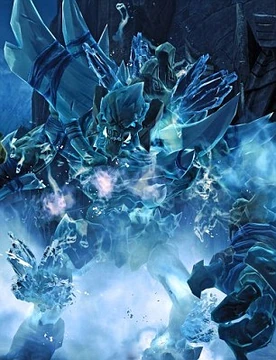
Ice giant
O Gigante de Gelo é um poderoso guardião das terras congeladas que testa a força de Morte logo no início de sua jornada.

O Gigante de Gelo é um poderoso guardião das terras congeladas que testa a força de Morte logo no início de sua jornada.
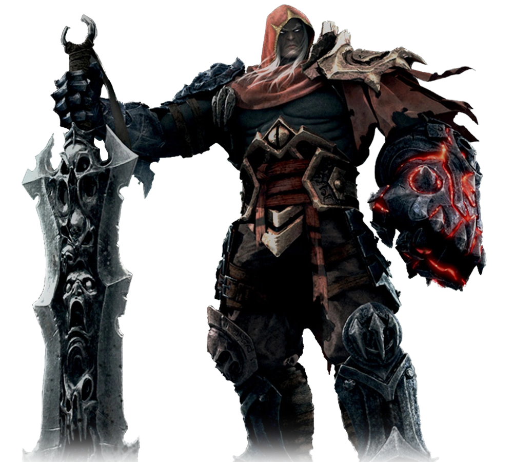
Guerra é acusado e preso injustamente, e Morte embarca em uma jornada para redimi-lo, enfrentando até mesmo uma manifestação sombria do próprio irmão.
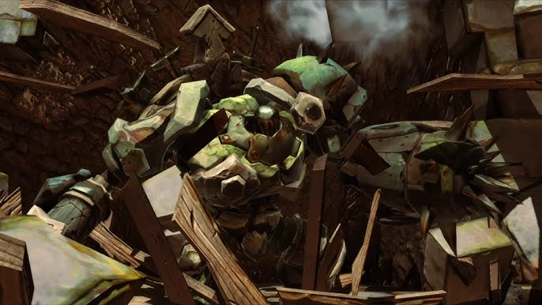
Gharn é um constructo corrompido nas Forjas que serve como um teste de habilidade, exigindo paciência e boa esquiva para ser derrotado.
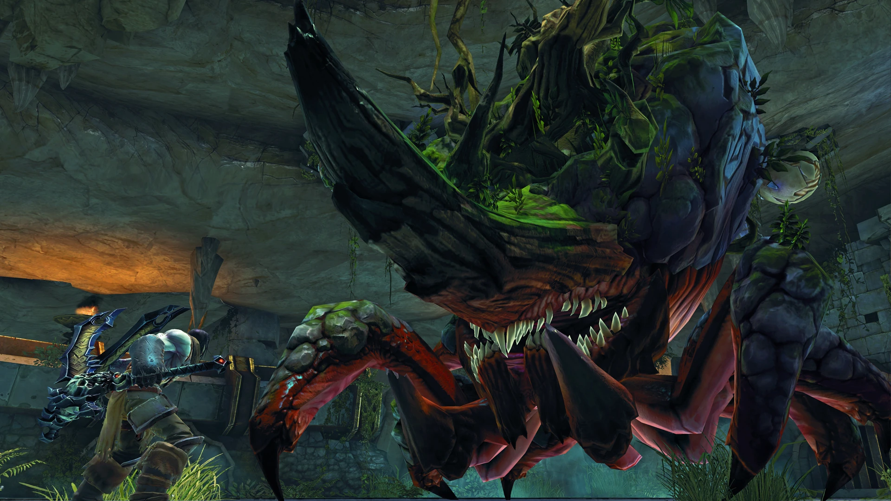
O Karkinos é uma criatura gigante semelhante a um caranguejo, com uma carapaça extremamente resistente.
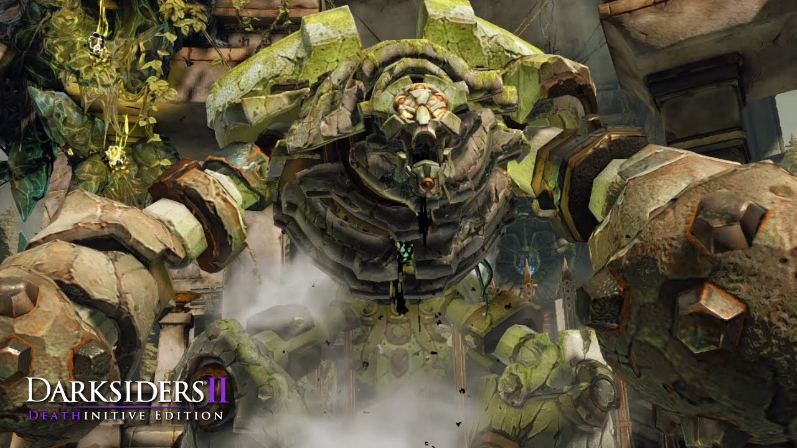
O Construct Hulk é um golem mecânico enorme e extremamente forte, que usa força bruta e resistência para esmagar inimigos.
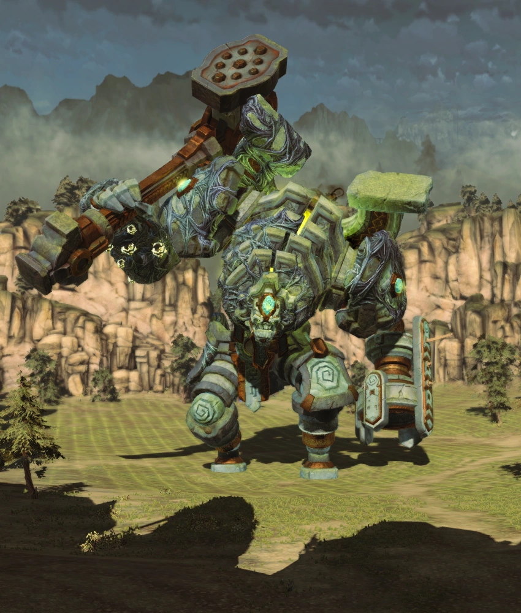
O Guardião é um gigante brutal que combina força massiva com ataques de área e impacto, tornando a luta um confronto intenso que exige esquiva e timing.
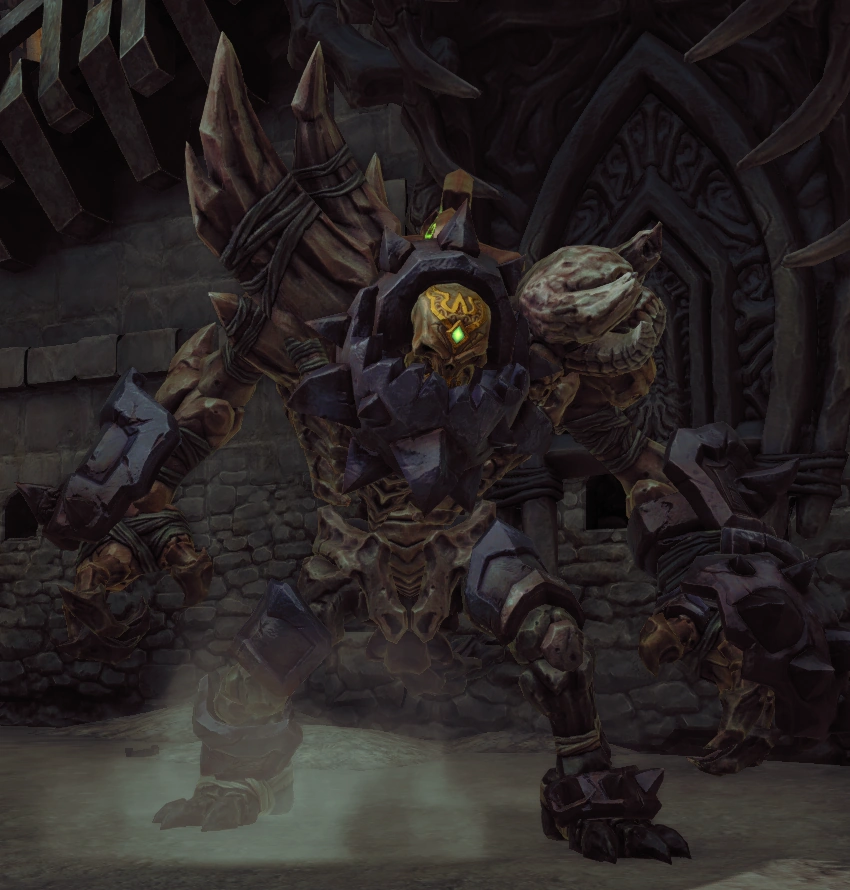
Gnashor é uma criatura ágil e agressiva que alterna entre ataques rápidos e emboscadas subterrâneas, tornando a luta imprevisível e intensa.
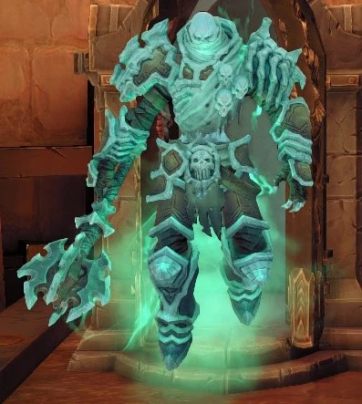
Phariseer é um poderoso senhor morto-vivo de Darksiders II, brutal em combate e capaz de invocar lacaios esqueléticos.
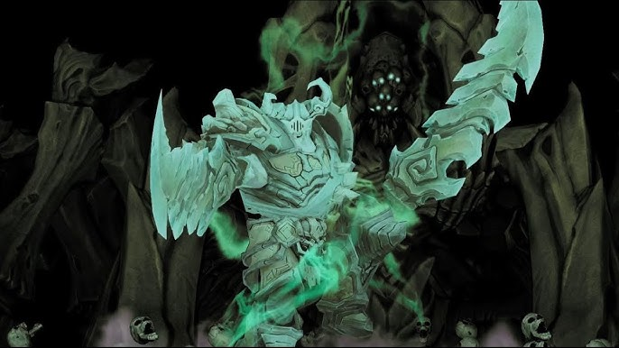
Basileus é um espectro régio e arrogante que se julga superior, mas revela traços trágicos de loucura e arrependimento após séculos de isolamento.
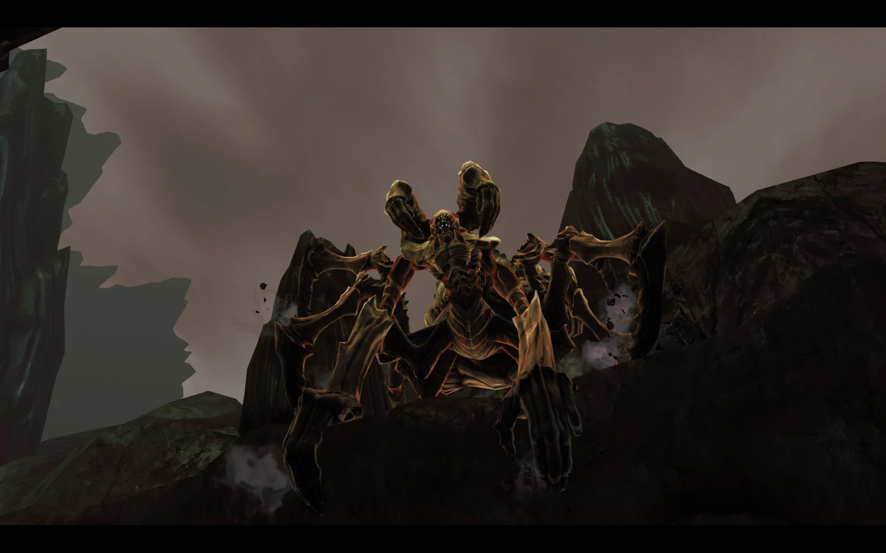
Uma aranha gigante de exoesqueleto resistente e olhos verdes, que mistura força bruta com velocidade imprevisível. Sendo um "mascote" de Basileus
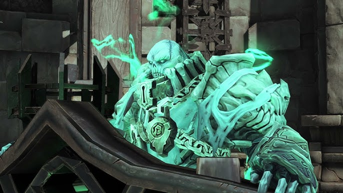
Judicator é uma figura monumental e quase estática, semelhante a um juiz sobrenatural. Em vez de lutar diretamente, invoca três desafios para completar.
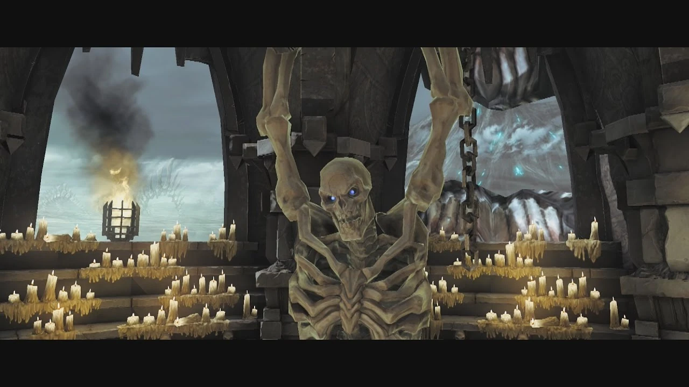
É um mestre de marionetes suspenso que não ataca diretamente, focando apenas em invocar hordas de esqueletos para lutar em seu lugar.
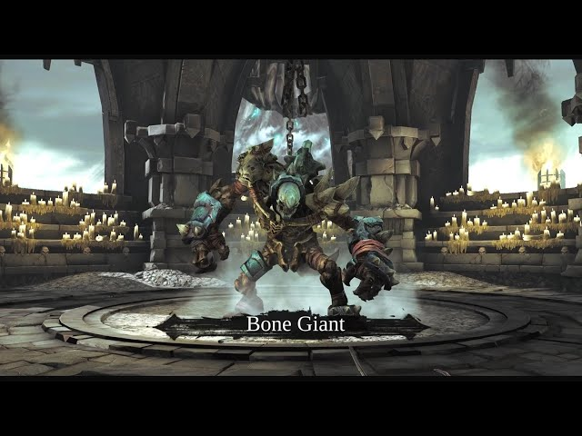
É um colosso bruto e lento que surge da fusão do Keeper com a horda de esqueletos derrotados, focando em ataques de esmagamento físico e ondas de choque.
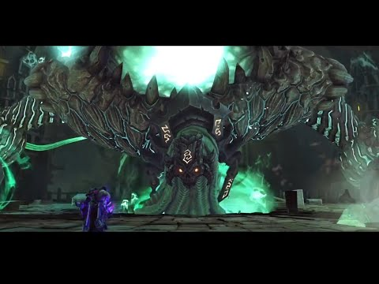
O The Wailing Host é um espírito colossal formado por almas atormentadas, que flutua e ataca à distância com energia sombria e invocações constantes.

Jamaerah é um escriba angelical corrompido, que manipula tudo com inteligência fria e conhecimento proibido.

O Archon em Darksiders II é um boss rápido e agressivo, com teleporte e ataques de luz; a luta exige reflexo, esquiva precisa e leitura de padrões.

Samael tem grande poder demoníaco, combate rápido e agressivo, além de ser inteligente, manipulador e muito resistente